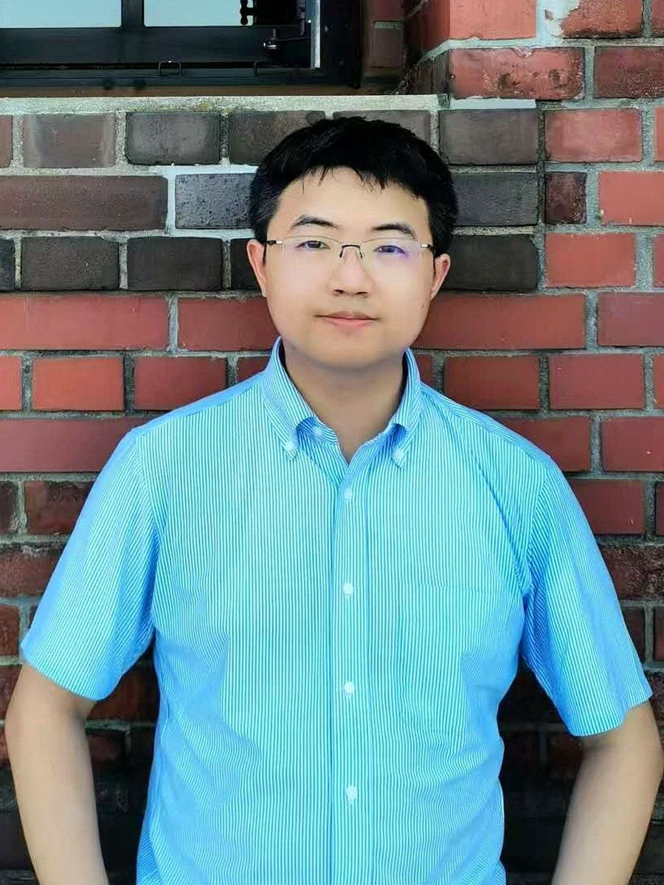

Welcome to XIE Lab
We are a theoretical condensed matter physics group at the School of Physics and Astronomy, Shanghai Jiao Tong University. Our research focuses on emergent quantum phenomena in low-dimensional quantum materials.
Current interests include unconventional superconductivity, topological phases, moire materials, Josephson physics, nonlinear optical and transport responses, and quantum geometric effects.

PI Biography
Ying-Ming Xie received his B.S. in Physics from Beijing Normal University in 2016 and his Ph.D. from the Hong Kong University of Science and Technology in 2021, under the supervision of Prof. Kam Tuen Law. During his Ph.D. study, he also collaborated with Prof. Patrick A. Lee at MIT.
He then carried out postdoctoral research at HKUST and RIKEN in the group of Prof. Naoto Nagaosa, and visited Prof. Jason Alicea's group at Caltech as a visiting postdoctoral researcher. He was selected for the National Excellent Young Scientists Fund Program (Overseas) in 2025. He joined the Institute of Condensed Matter Physics, School of Physics and Astronomy at SJTU in June 2026 as a tenure-track associate professor, PhD supervisor, and independent PI.
As of April 2026, he has published 31 papers with more than 1900 Google Scholar citations and an h-index of 21. He has more than 20 first-author or corresponding-author papers, including works in Nature Physics, Nature Materials, Physical Review Letters, PNAS, and Nature Communications.